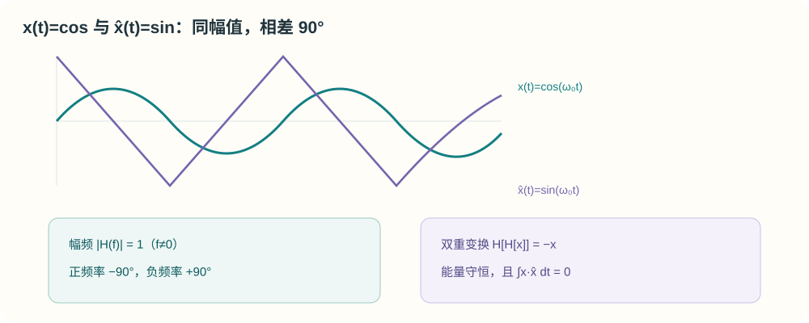
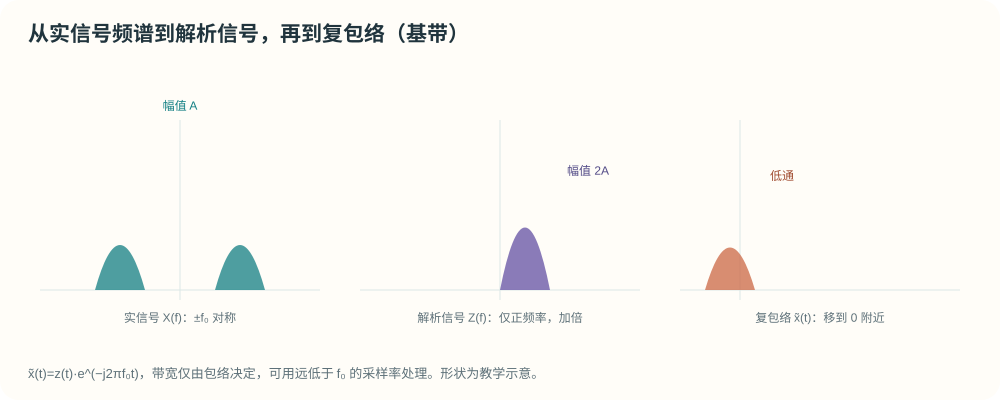
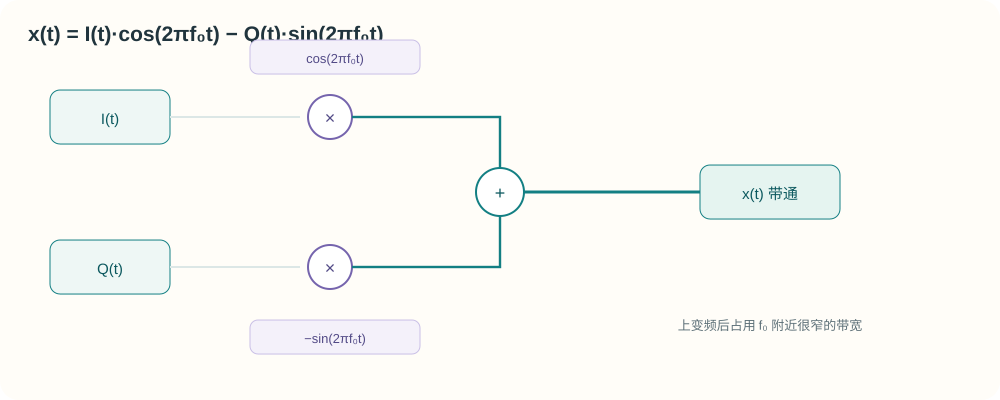
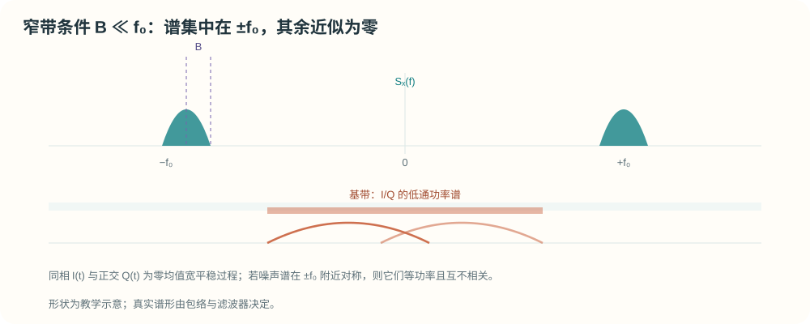

CHAPTER 16 · 系统与模型
窄带随机信号分析
当信号能量挤在中心频率附近一个很窄的频段里，高频载波并不携带信息，真正携带信息的是涨落缓慢的复包络。希尔伯特变换负责构造这个复表示，I/Q 两路则把它落地成可实现的电路。
- 写出希尔伯特变换的频域响应并解释它为何是 90° 移相器
- 由实信号构造解析信号与复包络，说明哪些信息被保留
- 用 I/Q 分量表示窄带信号，并说明窄带随机过程的 I/Q 统计性质
为什么窄带信号可以搬到基带处理
设想一个中心频率 f₀=900 MHz、带宽 B=200 kHz 的调幅信号。它的载波每秒振荡九亿次，但携带信息的包络每秒只变化十万次量级。要把它数字化，用采样率直接对准 900 MHz 代价高昂；而如果我们只关心包络，就可以在基带上用远低于 f₀ 的采样率处理它——信息一点不丢。
窄带就是这个条件：带宽远小于中心频率，B≪f₀（工程上常以 B/f₀<0.1 为界）。刚才的例子中 B/f₀≈2.2×10⁻⁴，是极端的窄带。
一个具体的确定性模型是调幅信号：
其中包络 A(t) 的变化速度远低于载波。这正是“高频载波本身不携信息”的数学表达：把 A(t) 频率搬回到 0 附近，就等于完成了从带通到基带的变换。
希尔伯特变换：幅度不变的 90° 移相器
实信号 x(t) 的希尔伯特变换定义为与 1/(πt) 的卷积（积分取柯西主值）：
它的本质在频域一览无遗——一个幅频恒为 1、只改变相位的全通滤波器：
由此可得出几条常用性质：
- 线性：H[a·x+b·y]=a·H[x]+b·H[y]。
- 双重变换：H[H[x(t)]]=−x(t)，两次相当于反相。
- 能量与正交：能量不变，且 ∫x(t)x̂(t)dt=0，二者在能量意义下正交。
- 常见对应：H[cos ω₀t]=sin ω₀t，H[sin ω₀t]=−cos ω₀t。

理想的不可实现性：1/(πt) 在 t=0 双侧都非零、且无限长，因此理想希尔伯特变换是非因果、无限长的。数字实现用有限长 FIR 逼近，会带来群延迟与帧边界瞬态（见本章末）。
解析信号与复包络
把信号与其希尔伯特变换组合成一个复信号，就得到解析信号：
它在频域只保留正频率：Z(f)=2X(f)u(f)（f>0），负频率置零。实部是原信号，虚部是它的希尔伯特变换——信息无损，只是换了一种写法。
若 x(t) 中心频率为 f₀，再乘一个复指数把正频率搬回零频，就得到复包络：
复包络是低通信号：它的带宽只由包络决定（例中约 200 kHz），与载波 900 MHz 无关。这就是“在基带处理、再搬回高频”的理论依据。

I/Q 正交表示与调制
把复包络写成 x̃(t)=I(t)+jQ(t)，代入实信号表达式并取实部：
其中 I(t)=a(t)cos φ(t) 是同相分量，Q(t)=a(t)sin φ(t) 是正交分量；a(t)=|x̃(t)| 是包络，φ(t)=arg x̃(t) 是相位。展开后也可见 a(t)²=I(t)²+Q(t)²、φ(t)=arctan(Q(t)/I(t))。
| 调制方式 | I(t) | Q(t) | 说明 |
|---|---|---|---|
| AM | A₀+m(t) | 0 | 信息仅在同相支路 |
| DSB-SC | m(t) | 0 | 抑制载波双边带 |
| PM | A₀cos φ(t) | A₀sin φ(t) | 信息在相位 |
| FM | A₀cos ψ(t) | A₀sin ψ(t) | ψ(t)=∫k·m(τ)dτ |
| QPSK | ±A/√2 | ±A/√2 | 4 个星座点 |
| 16QAM | {±1,±3}A/√10 | {±1,±3}A/√10 | 16 个星座点 |
各种调制不过是 I(t) 与 Q(t) 的不同取法；用复包络的语言，它们统一为“将基带复信号搬到载波频率上”。

窄带随机过程：I/Q 的统计性质
当 x(t) 是零均值宽平稳（WSS）窄带随机过程，其功率谱集中在 ±f₀ 附近的窄带内时，它的同相分量 I(t) 与正交分量 Q(t) 是联合宽平稳、零均值的实随机过程。若功率谱关于 ±f₀ 对称（即 Sx(f₀+f)=Sx(f₀−f)），还有更强的结论：
也就是说，包络的统计特性完全决定了窄带过程的二阶统计，而载波只提供 cos(2πf₀τ) 这个高频因子。

不相关不意味着独立：(16.7) 只说 RIQ=0。只有当 (I,Q) 还是联合高斯时才能进一步断言二者独立——这正是下一章窄带高斯包络/相位分析的起点。
可复现核查
下面用一个 64 点的离散傅里叶变换把希尔伯特变换实现为 “乘 −j·sgn(f)” 的频域操作，并验证四条性质。全部为纯 Python（仅用标准库 cmath/math），可在任意环境重跑。
from cmath import exp, pi
import math
N = 64
def dft(x, inv=False):
s = 1 if inv else -1
out = []
for k in range(N):
out.append(sum(x[n] * exp(s * 2j * pi * k * n / N) for n in range(N)))
return out
def hilbert(x):
X = dft(x)
Y = []
for k in range(N):
f = k if k < N // 2 else k - N # 有符号频率
Y.append(X[k] * (-1j if f > 0 else (1j if f < 0 else 0)))
return [v / N for v in dft(Y, inv=True)]
x = [math.cos(2 * pi * 3 * n / N) for n in range(N)]
xh = hilbert(x)
assert max(abs(xh[n] - math.sin(2 * pi * 3 * n / N)) for n in range(N)) < 1e-6
assert max(abs(hilbert(xh)[n] + x[n]) for n in range(N)) < 1e-6 # H[H[x]] = -x
assert abs(sum(x[n] * xh[n] for n in range(N))) < 1e-6 # 正交
e0 = sum(abs(v) ** 2 for v in x)
e1 = sum(abs(v) ** 2 for v in xh)
assert abs(e0 - e1) / e0 < 1e-6 # 能量守恒
检查点：N 点 DFT 中 f=3 的正弦对 cos 的响应恰好是 sin（移相 −90°）；两次变换回到 −x；原信号与变换后正交；能量相等。测试文件 examples/test_chapter_16.py 复用同一构造。
边界与陷阱
- 理想希尔伯特变换不可实现。1/(πt) 是非因果、无限支撑的；用有限长 FIR 逼近时存在群延迟，I/Q 两路必须对齐，否则会产生相位误差。分帧处理还要丢弃滤波器未收敛的边界样本。
- 直流分量要小心。对常数信号做希尔伯特变换得到零（H(0)=0），但硬件上的直流偏置会在 I/Q 两路引入不对称偏移，破坏理想的正交关系。
- I/Q 不平衡会产生镜像。真实调制器中两支路的增益与相位很难完全一致；“正交”只是理想模型。幅度/相位失衡会让负频分量泄漏到正频，形成镜像干扰。
- 窄带假设有前提。B≪f₀ 保证包络变化缓慢、复包络可低速采样；若带宽接近中心频率，“包络慢变”直觉失效，且直接降采样到基带可能混叠。
- 平稳性传给 I/Q。(16.7) 以 x(t) 零均值 WSS 为前提；含趋势或时变参数时，I/Q 不再平稳，等功率与不相关结论也不再成立。
下一章把高斯假设叠加到窄带过程上：当 I/Q 联合高斯且等功率不相关时，包络与相位的分布可以完全写出。
参考与核查依据
- MIT OpenCourseWare · Signals and Systems：傅里叶变换、全通与移相器、解析信号的基础。
- Wolfram MathWorld · Hilbert Transform：希尔伯特变换定义、频域响应与基本性质。
- ProbabilityCourse · Stationary Processes：宽平稳定义与相关函数性质。
- MIT OpenCourseWare · Random Processes：随机过程线性变换与二阶统计。
- A. Papoulis & S. U. Pillai, Probability, Random Variables and Stochastic Processes, 4th ed., McGraw-Hill, 2002：窄带过程的 I/Q 表示与 Hilbert 变换（第 10 章）。